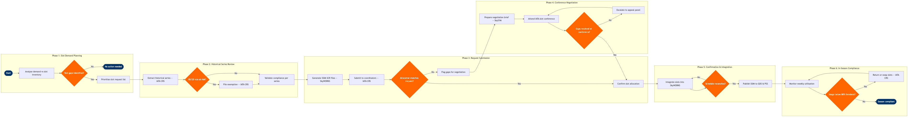

| Step | L4 Step Name | KPI / Target | Pain Point / Risk | Gate |
|---|---|---|---|---|
| 1.1 | Analyse network demand vs slot inventory | Slot coverage ratio ≥95% of planned frequencies | SkyCAST demand signals do not automatically map to coordinator-level slot granularity; manual crosswalk required for Level 3 airports | ⚠ |
| 1.2 | Prioritise slot request list by route value | Top-20 revenue routes have slot requests filed within 5 days of season open | SkyWORKS priority ranking may conflict with network-level schedule symmetry goals, requiring manual override | |
| 2.1 | Extract historical slot series from IATA CRS | Historical utilisation validated for 100% of held series within 3 business days | IATA CRS data latency of up to 48 h means late-returned competitor slots are invisible during initial analysis, skewing capacity view | |
| 2.2 | Assess 80/20 grandfather rights eligibility | ≥98% of held series retain grandfather status; at-risk flag raised ≥10 weeks before conference | Force majeure waiver criteria (e.g. COVID-era precedents) are interpreted inconsistently by airport coordinators, creating approval uncertainty | ⚠ |
| 2.3 | File force majeure exemption for at-risk series | Exemption accepted by coordinator within 10 business days for 90% of filings | Coordinator acceptance rates vary by airport authority; no standardised SLA exists under IATA WSG, exposing series to arbitrary rejection | |
| 3.1 | Generate SSIM slot request messages in SkyWORKS | Zero SSIM format errors on submission; ISR filed ≥8 weeks before IATA slot conference | SkyWORKS SSIM export does not auto-validate against airport coordinator's declared coordination parameters (declared capacity), requiring manual cross-check | |
| 3.2 | Submit Initial Slot Requests to coordinators | 100% of ISRs acknowledged within 48 h of IATA deadline; no late submissions | Multiple national coordinators (e.g. Heathrow Airport Slots Ltd, DFW, CDG FAB) use non-standard portals alongside SCR, increasing coordination overhead | |
| 3.3 | Review coordinator initial allocation returns | Gap analysis completed within 48 h of receiving allocation returns | Allocation returns often partially match requests with no rationale, requiring reverse-engineering of coordinator capacity logic using OAG data | ⚠ |
| 4.1 | Prepare slot negotiation brief for conference | Brief approved by VP Network Planning ≥5 days before conference | SkySYM simulation does not model competitor reaction to slot swaps, limiting predictive accuracy of negotiation scenarios | |
| 4.2 | Attend IATA slot conference and negotiate gaps | ≥75% of priority gap slots resolved at conference; average delta from preferred time ≤15 min | Airlines without alliance membership (e.g. unaligned LCCs) have reduced swap leverage at slot conferences; coordinators may favour legacy hub carriers | ⚠ |
| 4.3 | Escalate unresolved gaps to coordinator appeal panel | Appeals filed within 24 h of conference close; ruling received within 5 business days | IATA World Slot Guidelines appeal process is non-binding; coordinators retain final authority, making outcomes unpredictable for non-dominant carriers | |
| 5.1 | Import confirmed slots into SkyWORKS schedule | 100% of confirmed slots imported without timing conflict within 2 business days of final allocation | Slot times confirmed post-conference may conflict with crew pairing and aircraft routing already modelled in SkyWORKS, requiring full re-optimisation cycle | ⚠ |
| 5.2 | Publish confirmed SSIM to GDS and PSS | SSIM published within 5 business days of slot confirmation; GDS pick-up error rate <0.5% | NDC API Gateway does not automatically ingest SSIM updates; NDC-sourced content requires separate manual schedule push, risking content divergence | |
| 6.1 | Monitor weekly slot utilisation against 80% rule | Utilisation ≥80% maintained for all series; alerts triggered if any series falls below 85% buffer | Altéa operational departure data lags coordinator reporting window by up to 72 h, creating risk of under-reporting in close-to-threshold series | ⚠ |
| 6.2 | Return or swap underutilised slots to coordinator | Returns filed ≥6 weeks before operated date; 100% of below-threshold series actioned within 48 h of flag | Late slot returns reduce secondary market swap opportunities; airlines that pool returns informally (Star Alliance, oneworld) gain competitive advantage unavailable to unaligned carriers | |
| 6.3 | Archive season compliance evidence for grandfather rights | Archive complete within 10 business days of season end; 100% of series have supporting evidence on record | No industry-standard digital audit trail format exists; evidence quality varies by coordinator, creating litigation risk if grandfather rights are disputed |